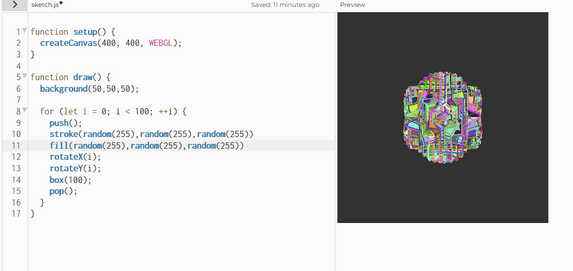

Experiment 2 - Spontaneous Synchronization
Imitate
For this experiment I wanted to imitate the art of spontaneous synchronization. Here is an example: https://www.youtube.com/watch?v=T58lGKREubo. This video shows metronomes starting at different times, but due to their ability to move the board below them, they will eventually synchronize. I wanted to make something similar to this, so my idea was to rotate objects at different speeds to the point where they eventually converge. (Spontaneous Synchronization)
Integrate
My first idea was to make a bunch of cubes rapidly rotate at different speeds in order to create interesting shapes. Here is a screenshot of my first iteration.
Unfortunately, this wasn’t quite what I wanted. I struggled to achieve the effect that I was looking for so I started to do more research on p5js shapes and how I would give each cube different rotational speeds. I realized that I needed to utilize a class to store information for each individual shape.
Innovate
From here, I started to make a class for cubes and the variable that I would need would be a vector for the object’s rotational speed, the size, and the rotational angle. The update method is the draw method for each individual cube. It follows the same infrastructure from the first example, but I needed Z rotation for the cubes to get the effect that I was looking for, which was chaotic.
Now, using my technique from my first iteration I realized that the colors were way too flashy and were not safe for people with epilepsy. I added the cube’s color to the constructor and made sure to set the colors in the p5js setup function. On top of this, I modified the update method to fill from the cube’s color set from the constructor.
Reflection
For this project, I did all of the work myself. I enjoyed learning p5js and messing around with different functions in the p5js reference page. I knew I wanted to utilize vectors in order to control the rotation of the objects so I referenced the p5.vector page a lot. I think that the lows were just generally figuring out p5js, but after I got the concept I understood the framework somewhat well. The highs were finally being able to get the cubes to rotate properly and all I had to do was fine tune and polish.